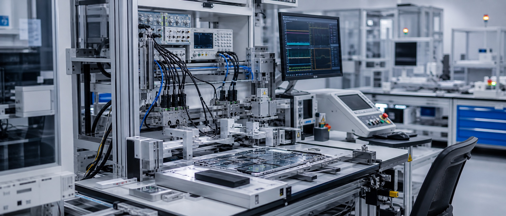

年工厂测试软件开发经验
参与 NPI 阶段的软硬件测试，涵盖 Dry Run、试产验证与问题调试，并协助量产阶段的问题排查。

工程测试环境示意CAREER STORY
我的职业生涯从闻泰开始。刚毕业加入团队时，我第一次接触 Atlas2 Matchbox，随后在 Apple TV NPI 项目中独立完成 LVCC、QT0、QT1 站位的 Overlay 开发与试产验证，逐渐建立起对测试软件、设备通信和现场流程的理解。
后来在德科，我主要从事 App 自动化测试，基于 Airtest 开发和维护自动化脚本，参与兼容性与 Monkey 测试。这段经历让我从工厂站位测试走向应用软件测试，拓宽了对测试方法与自动化的理解。
在立臻，我重新投入到 Apple CM 项目工作中，参与 iPhone Pro Max 与 iPhone Air NPI 阶段 QT 站位的 Overlay 开发，并承担了更广泛的 StationSW 职责：工厂测试软件、自动化工具、工作流程优化、生产准备和团队级交付。
CAREER SIGNAL
参与 NPI 阶段的软硬件测试，涵盖 Dry Run、试产验证与问题调试，并协助量产阶段的问题排查。
参与 iPhone Pro Max、iPhone Air 和 Apple TV 项目，负责 SMT、FATP 测试站位的软件开发与现场验证。
具备 Atlas2 Matchbox、Schooner 的开发经验，熟悉框架结构、兼容性适配与站位测试流程。使用 Objective-C 开发 Atlas2 插件，并使用 Swift 开发配套工具。
FEATURED WORK